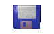
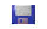
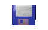

~~~HELLO I AM TREY~~~~
Welcome to my home on the world wide web!
An awesome jpeg (it loads super fast!)
 



Click for the [ Random page ]
Want to join the ring? Click here for info.


Welcome to my home on the world wide web!
An awesome jpeg (it loads super fast!)
